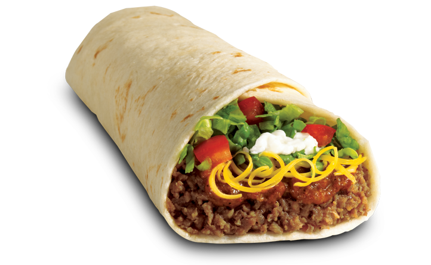
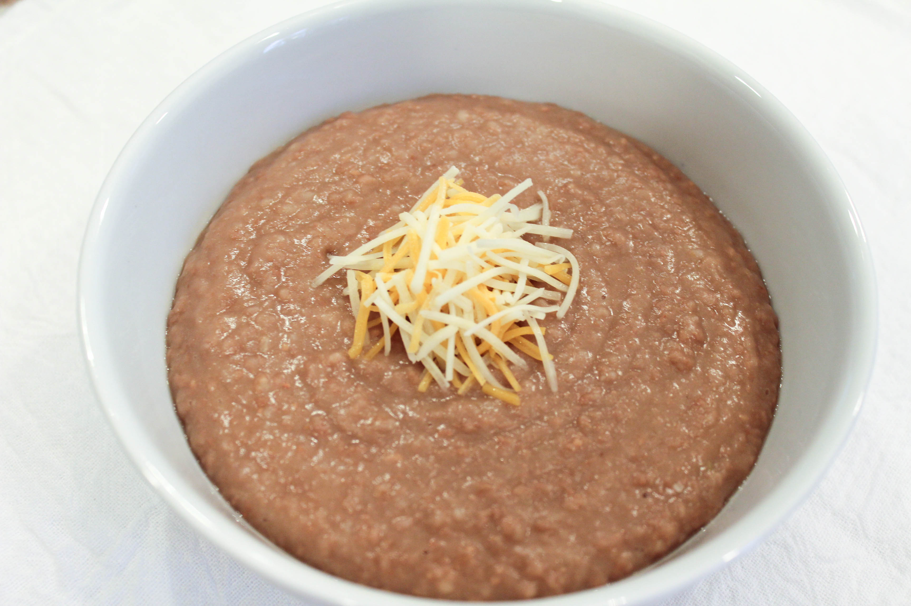
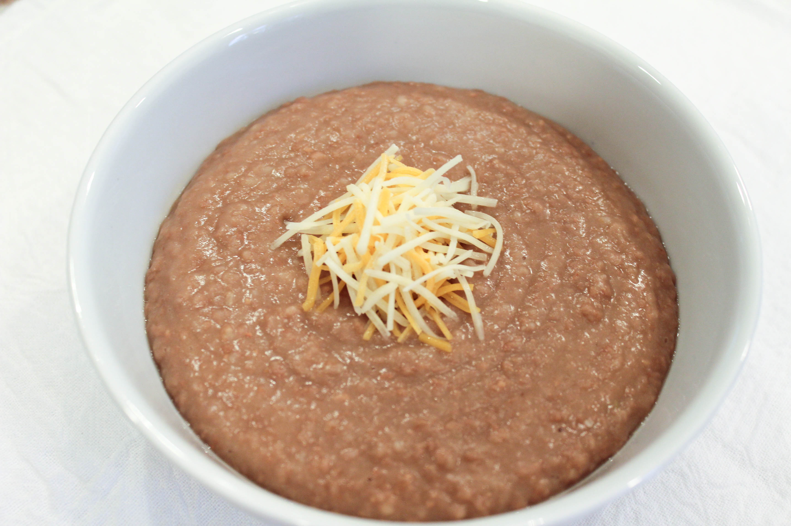

Mexican
Mexican food is one of the most delicious and traditional food types in the world. Some examples of this food are tacos, burritos, rice and beans, and much more! Delicious tortillas to wrap meat and beans in are made from a perfect kind of flour. These meals are made traditionally from Mexico itself, so be ready to immerse yourself in this culture. See below for a list of the mexican food served here at Foodelicious.
Taco - $7.99

This is an all Mexican Taco from the kitchen of a lovely latina lady. She is an extremely good cook, in fact, the best in Mexico City!
Burrito - $10.99
This is a burrito with fresh ingredients straight from the farm. You can get beef, pork, or chicken on this burrito, with optional additional toppings such as tomatoes or peppers for $1.99 more.
Rice & Beans - $6.99
 

Rice & Beans is a fine dish that is prepared from fresh ingredients. All rice is grown down in Mexico. This dish also comes with cheese, caked on thin, medium, or thick.